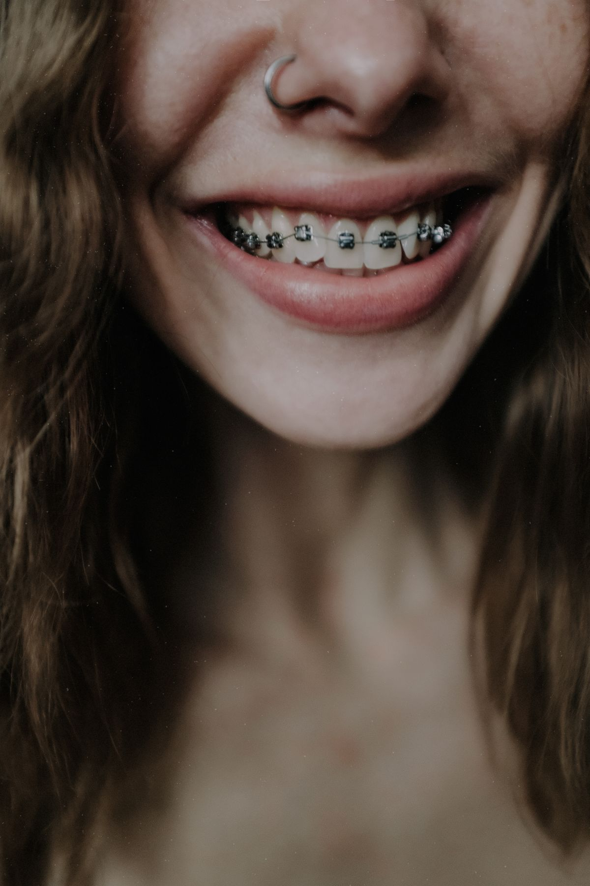
ارتودنسی ثابت
درمان اصلی و مطمئن ناهنجاریهای دندانی با براکتهای فلزی یا سرامیکی همرنگ دندان؛ مناسب نوجوانان و بزرگسالان.
دکتر مهیار ماهوش محمدی، متخصص ارتودنسی، عضو هیئت علمی دانشگاه و عضو انجمن ارتودنتیستهای آمریکا، درمانهای ارتودنسی کودکان، نوجوانان و بزرگسالان را در دو شعبه قیطریه و سعادتآباد تهران انجام میدهد.
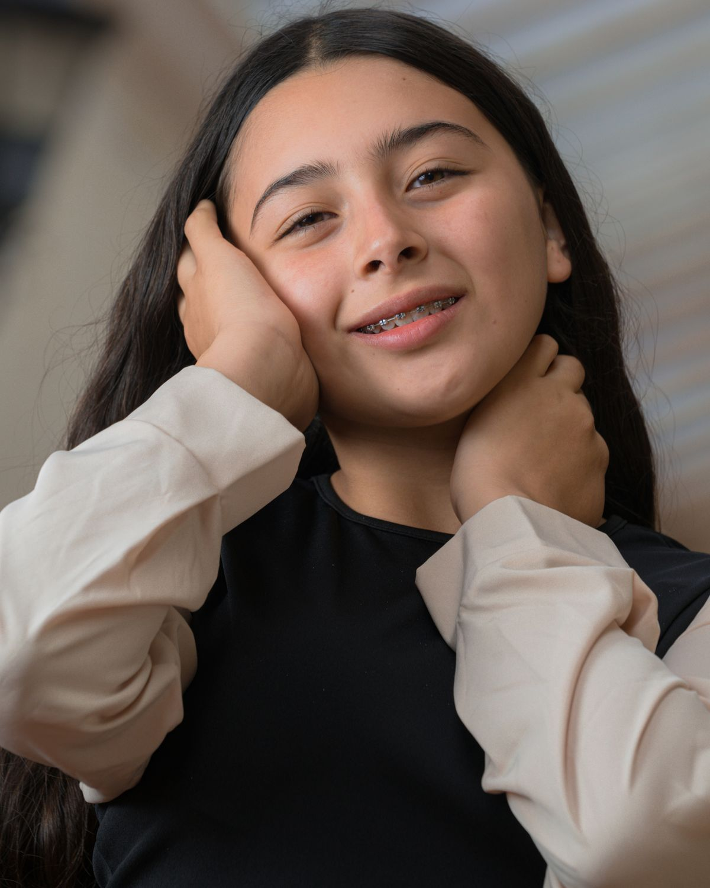
از ارزیابی زودهنگام کودکان تا ارتودنسی نامرئی بزرگسالان؛ انتخاب روش، بعد از معاینه و بررسی کامل فک و دندانها انجام میشود.

درمان اصلی و مطمئن ناهنجاریهای دندانی با براکتهای فلزی یا سرامیکی همرنگ دندان؛ مناسب نوجوانان و بزرگسالان.
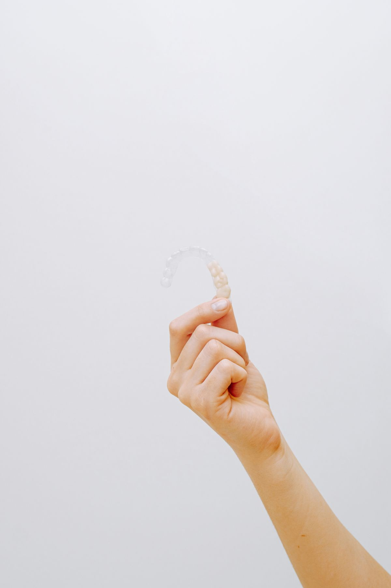
پلاکهای شفاف و متحرک که تقریباً دیده نمیشوند؛ انتخابی مناسب برای بزرگسالانی که ظاهر درمان برایشان مهم است.
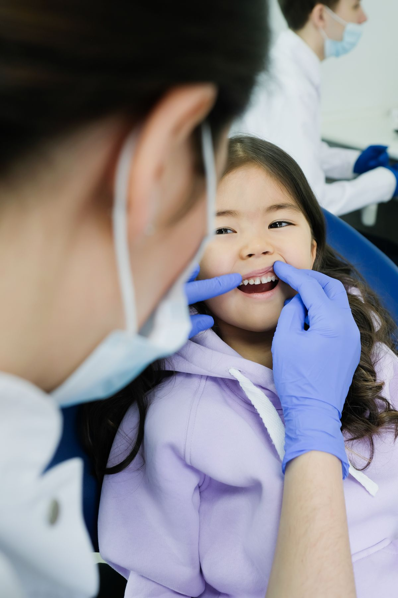
ارزیابی زودهنگام رشد فک و رویش دندانها؛ درمان بهموقع در کودکی، بسیاری از ناهنجاریهای آینده را سادهتر میکند.
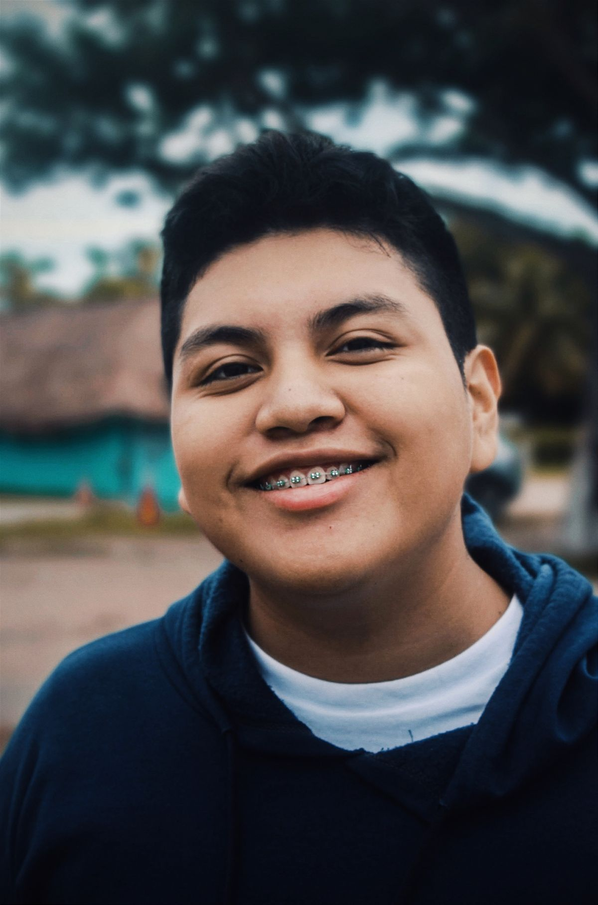
نوجوانی بهترین زمان اصلاح ناهنجاریهای فک و دندان است؛ هم نتیجه سریعتر است، هم لبخند اعتمادبهنفس سالهای بعد را میسازد.
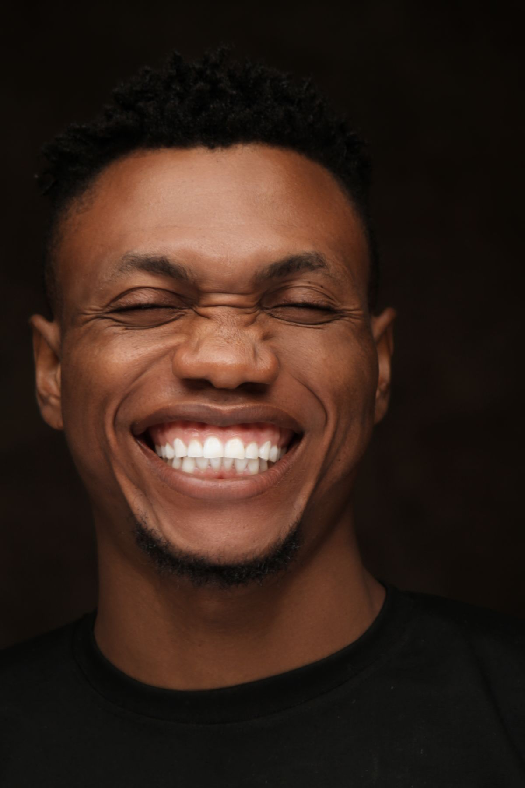
برای مرتب کردن دندانها هیچوقت دیر نیست؛ با روشهای ثابت یا نامرئی، متناسب با سبک زندگی و شرایط کاری شما.
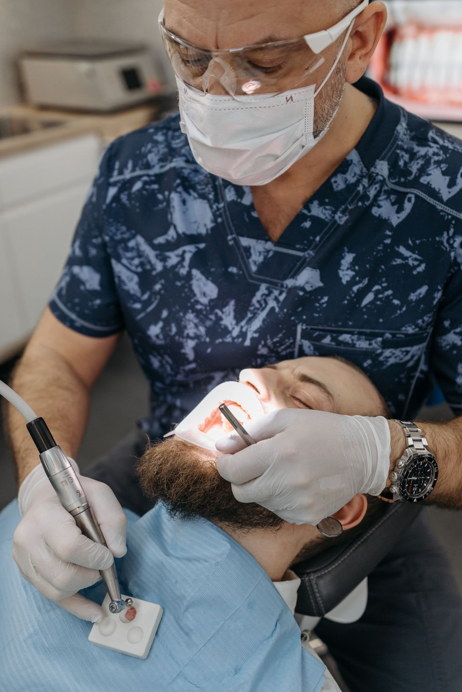
درمان تخصصی ناهنجاریهای فکی؛ از هدایت رشد در سنین پایین تا آمادهسازی ارتودنسی پیش از جراحی فک در بزرگسالان.
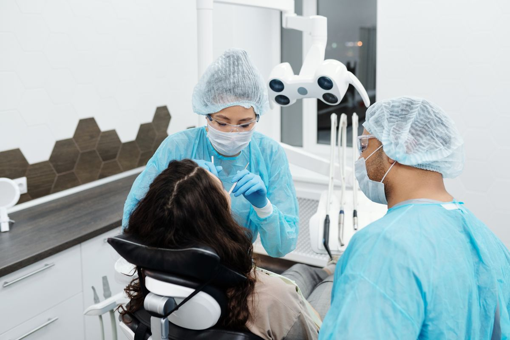
ارتودنسی درمانی چندساله است و نتیجهاش یک عمر با شما میماند. به همین دلیل، انجام آن زیر نظر مستقیم متخصص ارتودنسی، با دانش روز و طرح درمان دقیق، تفاوت اصلی را رقم میزند.
دکتر مهیار ماهوش محمدی علاوه بر درمان بیماران، عضو هیئت علمی دانشگاه است و دانش تخصصی ارتودنسی را تدریس میکند.
عضویت در انجمن ارتودنتیستهای آمریکا یعنی همراهی با استانداردها و دانش روز این تخصص در سطح بینالمللی.
کلینیک قیطریه شایان VIP و شعبه سعادتآباد؛ هرکدام برایتان نزدیکتر است، همانجا درمان را شروع کنید.
از ارزیابی پیشگیرانه کودکان تا ارتودنسی نامرئی بزرگسالان؛ برای هر سن، روش مناسب همان سن انتخاب میشود.
دقت در هر مرحله؛ از معاینه و بررسی تا اجرای درمان و پیگیری نتیجه.
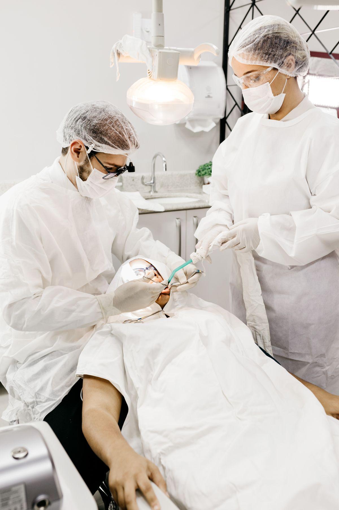
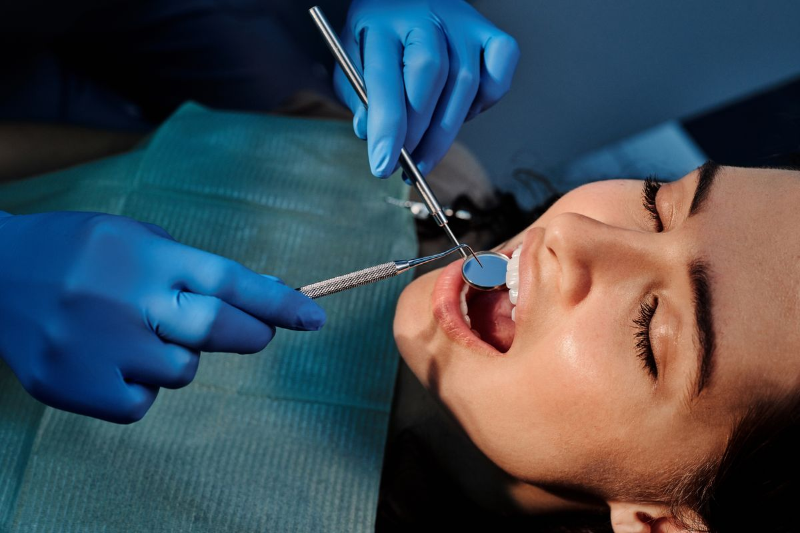
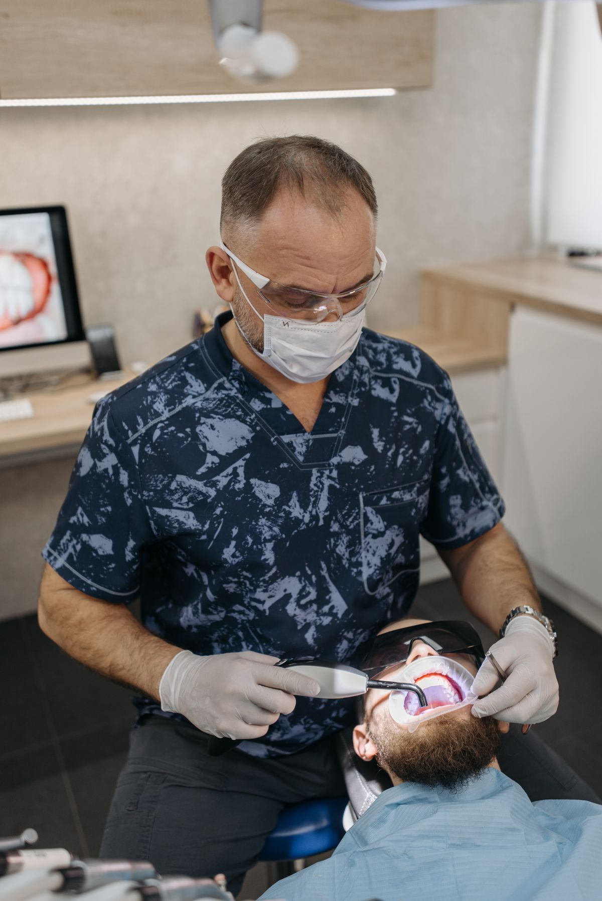
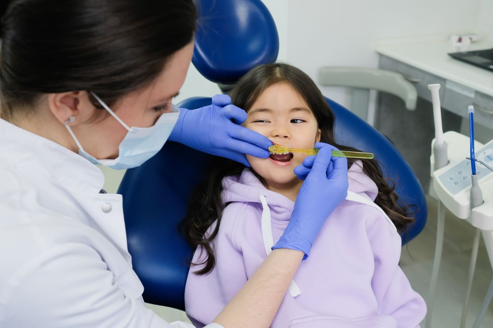
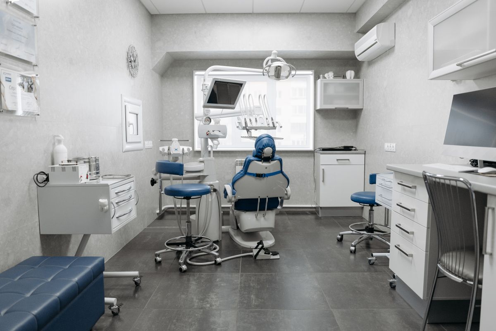
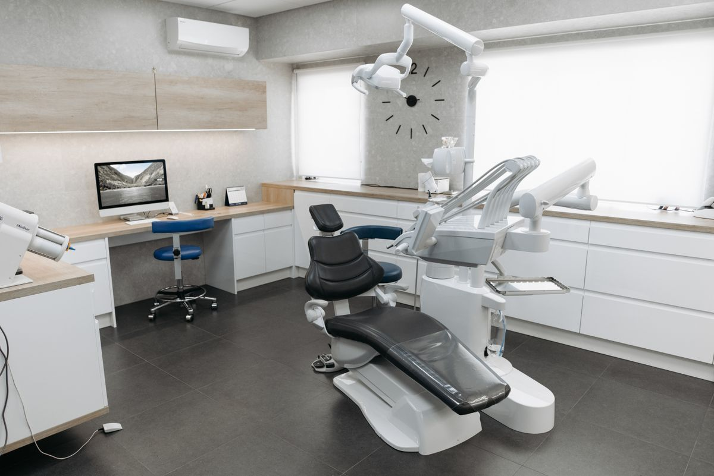
در جلسه اول، وضعیت دندانها و فک معاینه میشود و عکسها و مدارک لازم برای طراحی درمان بررسی میشود.
روش مناسب — ثابت، سرامیکی یا نامرئی — با توجه به ناهنجاری، سن و سبک زندگی شما پیشنهاد و شفاف توضیح داده میشود.
درمان آغاز میشود و در جلسات منظم، حرکت دندانها کنترل و تنظیمات لازم انجام میشود تا مسیر درمان دقیق پیش برود.
بعد از پایان درمان فعال، با نگهدارنده (ریتینر) و کنترلهای دورهای، نتیجه لبخند شما پایدار میماند.
برای رزرو نوبت مشاوره در هر یک از دو شعبه قیطریه یا سعادتآباد، با شماره ۰۲۱۲۶۶۰۴۹۰۷ تماس بگیرید تا نزدیکترین زمان ممکن برایتان هماهنگ شود.
ارزیابی اولیه بهتر است از کودکی انجام شود تا رشد فک هدایت شود؛ اما درمان اصلی برای بسیاری از نوجوانان در سنین نوجوانی انجام میشود و بزرگسالان هم در هر سنی میتوانند ارتودنسی کنند. زمان دقیق شروع، بعد از معاینه مشخص میشود.
الاینرهای شفاف برای بسیاری از ناهنجاریهای خفیف تا متوسط، بهویژه در بزرگسالان، گزینه مناسبی است؛ اما برای همه موارد قابل استفاده نیست. مناسب بودن آن برای شما در جلسه معاینه و بعد از بررسی کامل مشخص میشود.
مدت درمان به نوع و شدت ناهنجاری و همکاری بیمار بستگی دارد و برای هر فرد متفاوت است. در جلسه مشاوره، بعد از معاینه و بررسی عکسها، مدت تقریبی درمان به شما گفته میشود.
برای رزرو نوبت معاینه نزد متخصص ارتودنسی در قیطریه یا سعادتآباد، همین حالا تماس بگیرید.